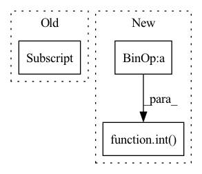

Pattern ID :540
Before Change
img_mask = torch.zeros((1, H, W, 1)) // 1 H W 1
cnt = 0
for h in (
slice(0, -self.window_size[0] ),
slice(-self.window_size[0], -self.shift_size[0]),
slice(-self.shift_size[0], None)):
for w in (After Change
self.drop_path = DropPath(drop_path) if drop_path > 0. else nn.Identity()
self.norm2 = norm_layer(dim)
mlp_hidden_dim = int( dim * mlp_ratio)
self.mlp = Mlp(in_features=dim, hidden_features=mlp_hidden_dim, act_layer=act_layer, drop=drop)
if self.shift_size > 0:
// calculate attention mask for SW-MSAIn pattern: SUPERPATTERN
Frequency: 3
Non-data size: 3
Instances Fragment ID: 1631711
Project Name: eora-ai/torchok
Commit Name: ab2534f05b48a529d03f8c28af2579245772f4e0
Time: 2022-07-11
Author: rashit.bayazitov.1995@gmail.com
File Name: src/models/modules/blocks/swin_block.py
M Class Name: SwinTransformerBlock
N Class Name: SwinTransformerBlock
M Method Name: __init__(14)
N Method Name: __init__(14)
M Parent Class: nn.Module
N Parent Class: nn.Module
M File Name: src/models/modules/blocks/swin_block.py
N File Name: src/models/modules/blocks/swin_block.py
M Start Line: 73
M End Line: 108
N Start Line: 75
N End Line: 114
Before Change
self.output_name = set_default(_look="output_name", _dict=config, _default="x")
input_dim = _streams[self.input_name][-1]
input_length = _streams[self.input_name][-2]
output_dim = input_dim
input_batch_multiplier = int(_streams[self.input_name][0].replace("BSZ", ""))
output_length = input_length * input_batch_multiplierAfter Change
input_dim = input_shape[-1]
// outputs
output_length = int( input_length*input_dim/ self.output_dim)
// Prepare streams info
self.streams_in_module = {"inputs": [[self.input_name, [f"BSZ", input_length, input_dim]],
], Fragment ID: 1631760
Project Name: antofuller/configaformers
Commit Name: 453d5f7206fd64792caa3aa2a7014881bad764aa
Time: 2021-11-21
Author: afuller187187@gmail.com
File Name: rearranging_module.py
M Class Name: UnPackBatch
N Class Name: UnPackFeatures
M Method Name: __init__(3)
N Method Name: __init__(3)
M Parent Class: nn.Module
N Parent Class: nn.Module
M File Name: rearranging_module.py
N File Name: rearranging_module.py
M Start Line: 267
M End Line: 281
N Start Line: 307
N End Line: 321
Before Change
channel_index = 0
for i in range(layer_num):
setattr(self, "layer%d" % i, SelfDistillationModule(input_channel[i], input_channel[i+1] ))
self.register_hook()
After Change
self.layer_num = layer_num
self.total_feature_maps = {}
output_channel = int( input_channel / 2)
for i in range(layer_num):
setattr(self, "layer%d" % i, SelfDistillationModule(input_channel, output_channel))
input_channel = output_channel Fragment ID: 1631764
Project Name: sjleo/ffsd
Commit Name: 9967e950166a336ffae06abe65c275109f648a9e
Time: 2020-10-30
Author: 864589477@qq.com
File Name: models/self_distillation.py
M Class Name: SelfDistillationModel
N Class Name: SelfDistillationModel
M Method Name: __init__(3)
N Method Name: __init__(3)
M Parent Class: nn.Module
N Parent Class: nn.Module
M File Name: models/self_distillation.py
N File Name: models/self_distillation.py
M Start Line: 29
M End Line: 32
N Start Line: 29
N End Line: 34